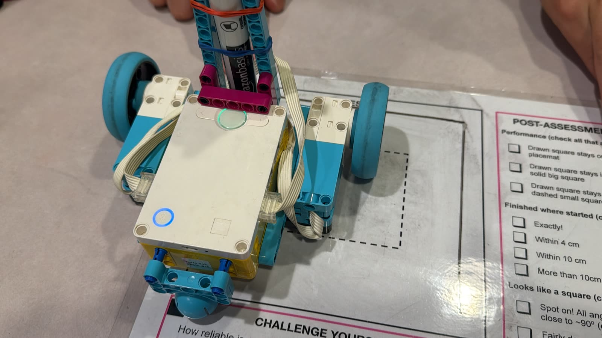
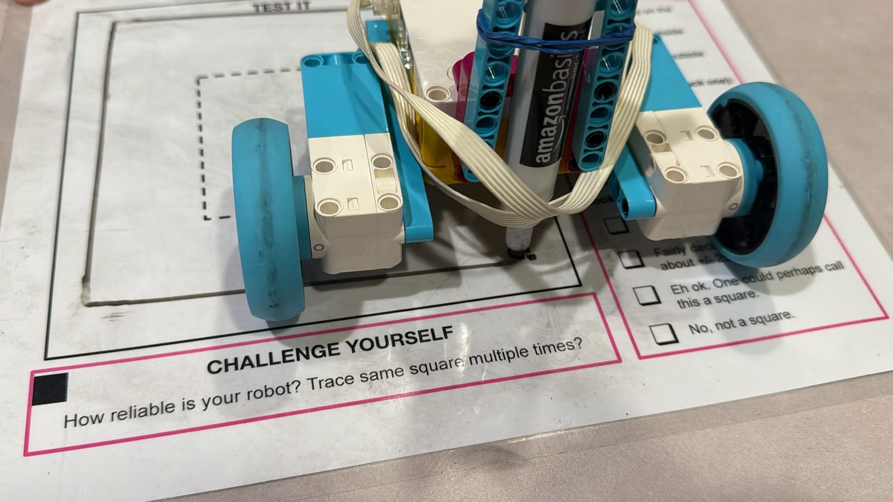
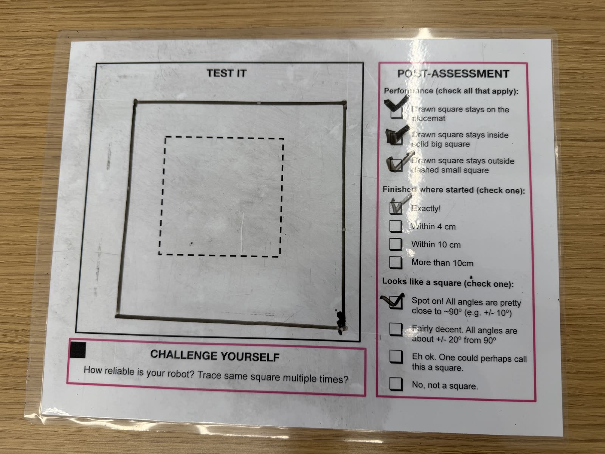

The Draw a Square challenge was to program a LEGO SPIKE Prime robot to draw a square with a marker on a placemat. The drawn square had to stay inside the solid big square and outside the dashed small square, finish where it started, and have corners close to 90°.
My robot drives on two motors, one per wheel (left motor on port B, right motor on port A), and a ball caster for support. A dry-erase marker is held upright by a beam tower and rubber bands so that its tip sits at the midpoint between the two wheel centers. Because of this, the robot turns around the pen at each corner.
My Python program repeats the same steps four times, once for each side. First, both wheels drive forward 256 motor degrees together, my trial value for a 12.5 cm side with 56 mm wheels. Then the program resets the hub’s yaw angle, spins the robot in place (left wheel backward, right wheel forward) until the motion sensor reads a 90° turn, and brakes. Resetting the yaw before every corner means each turn is measured separately.


Performance: The drawn square stayed on the placemat, stayed inside the solid big square, and stayed outside the dashed small square (all three checked).
Finished where started: Exactly!
Looks like a square: Spot on! All angles are pretty close to 90° (within about ±10°).
# Setup: left wheel motor on port B; right wheel motor on port A.
# Pen tip is at the midpoint between the two wheel centers.
from hub import port, motion_sensor
import runloop
import motor
import motor_pair
# Trial value for a 12.5 cm side with 56 mm wheels.
SIDE_MOTOR_DEGREES = 256
FORWARD_SPEED = 100 # Motor degrees per second.
TURN_SPEED = 80 # Motor degrees per second.
TURN_ANGLE = 900 # 90 degrees in motion-sensor decidegrees.
async def main():
# Pair the wheels so they drive together.
motor_pair.pair(motor_pair.PAIR_1, port.B, port.A)
# Draw all four sides, turning anticlockwise at each vertex.
for side_number in range(4):
await motor_pair.move_for_degrees(
motor_pair.PAIR_1,
SIDE_MOTOR_DEGREES,
0,
velocity=FORWARD_SPEED
)
# Measure each turn separately.
motion_sensor.reset_yaw(0)
await runloop.sleep_ms(50)
# Turn around the pen: left wheel backward, right wheel forward.
motor_pair.move_tank(
motor_pair.PAIR_1,
-TURN_SPEED,
TURN_SPEED
)
# Keep checking the angle while allowing the hub to run other tasks.
while abs(motion_sensor.tilt_angles()[0]) < TURN_ANGLE:
await runloop.sleep_ms(5)
motor_pair.stop(motor_pair.PAIR_1, stop=motor.BRAKE)
# Release the motor ports when the square is complete.
motor_pair.unpair(motor_pair.PAIR_1)
runloop.run(main())